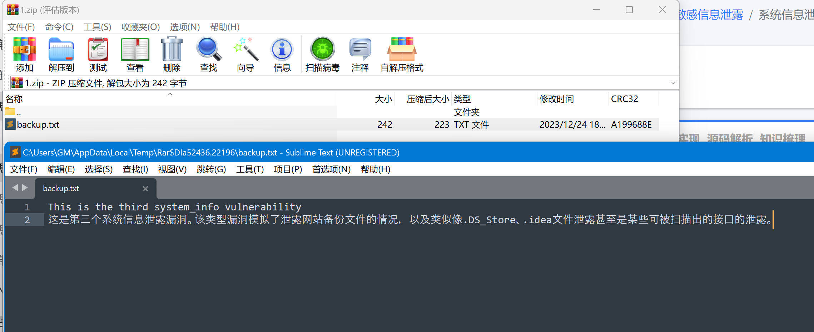

系统信息泄露
本页面包含三个泄露了系统相关信息的漏洞！可以点击右上角[知识梳理]查看漏洞分类喔！
思路提示
- 如果不做好系统信息搜集，那么漏洞挖掘会事倍功半！
- 随便翻翻吧，信息的泄露都是不经意间的~
正确实现
进入漏洞页面后抓包，并点击页面中唯一按钮先去下一关，发现向服务端发送了一条GET请求：
根据响应包提示，在参数
param处输入字符'：可以发现接口返回状态500，并爆出一条数据库错误，此处泄漏了后端SQL信息。在拦截出修改参数并放包：
找到了第一个系统信息泄露点。
在BurpSuite，HTTP历史记录里，通过信息扫描插件（如Hae、FinfoX等）或JS审计，可以发现一条JS请求泄露了内网IP，该IP可能是WEB服务器内网下的其他主机：
找到了第二个系统信息泄漏点。
考虑到系统信息泄露的方式，对网页目录进行扫描，看是否存在备份文件或其他泄露文件。
此处使用Bp进行扫描，您也可以使用专门的目录扫描器，在爆破模块中加入变量并导入备份文件字典：
扫描到存在
1.zip，该网站可能存在备份文件：找到了第三个系统信息泄露点。
源码解析
- 注意该接口，会将抛出的异常信息回调到响应中，致使系统信息泄露：